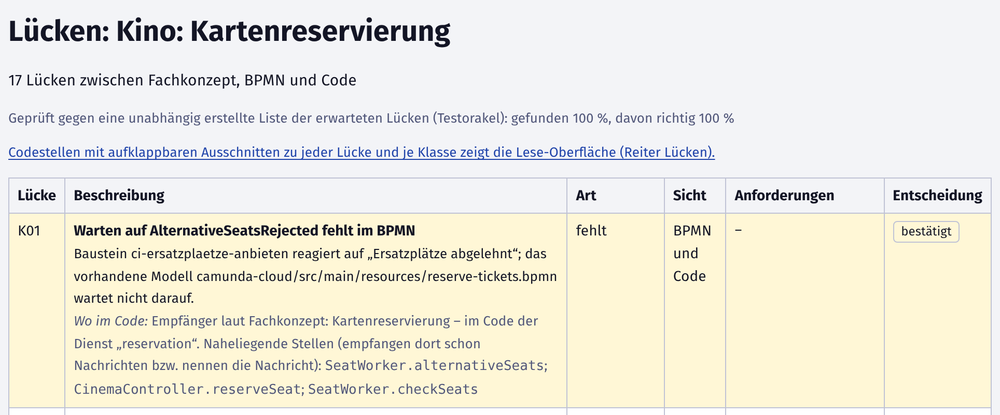

So findet Kanonik eine Lücke
Eine kurze Geschichte aus der Kino-Demo – Schritt für Schritt, ohne Vorwissen.
Die Kundin sagt Nein – und nichts passiert
Anna will zwei Kinokarten reservieren. Ihre Wunschplätze sind schon vergeben; das Kino bietet ihr zwei andere Plätze an. Die gefallen Anna nicht – sie lehnt ab.
Was vereinbart ist
Was die Anwendung tun soll, hält der Fachbereich in einem Fachkonzept fest – einem Dokument mit nummerierten Anforderungen. Im Fachkonzept des Kinos steht in Abschnitt 4.3:
Lehnt der Kunde ab oder läuft die Bestätigungsfrist ab, wird die Reservierung storniert.
Und in der Tabelle der Nachrichten: „Ersatzplätze abgelehnt – vom Kunden an die Kartenreservierung“.
Was gebaut wurde
Der Ablauf ist als Prozessmodell umgesetzt – einem Diagramm in der Notation BPMN, das eine Prozess-Engine Schritt für Schritt ausführt. An der Stelle, an der der Kunde die Ersatzplätze bestätigen soll, wartet das Modell auf genau eine Nachricht: die Bestätigung. Auf eine Ablehnung wartet es nicht. Auch im Programmcode gibt es nur einen Weg, das Angebot anzunehmen – keinen, es abzulehnen.
Was das bedeutet
Annas Nein kommt nirgends an. Ihre Reservierung bleibt offen, bis nach zwei Minuten eine Frist abläuft und das System sie von selbst storniert. Im Betrieb fällt das niemandem auf: Am Ende ist die Reservierung ja storniert – nur aus dem falschen Grund und zu spät.
Wie Kanonik das findet
Kanonik liest alle drei – Fachkonzept, Prozessmodell und Code – und legt sie nebeneinander. Das Fachkonzept nennt eine Nachricht, auf die das Modell nie wartet. Genau das ist eine Lücke: eine Stelle, an der Fachkonzept, Modell und Code nicht zusammenpassen. Zu jeder Lücke zeigt Kanonik, woher die Erwartung kommt (hier der Schritt „Ersatzplätze anbieten“ aus Abschnitt 4.3), welches Modell betroffen ist und wo im Code die Nachricht ankommen müsste.

Wer entscheidet
Nicht jede Lücke ist ein Fehler – vielleicht wurde die Ablehnung absichtlich weggelassen. Das entscheidet eine Fachexpertin. Kanonik hält ihre Entscheidung mit Begründung fest; beim nächsten Abgleich bleibt sie erhalten. Diese Lücke hat sie bestätigt.
Und das ganze Projekt?
In der Kino-Anwendung hat Kanonik 17 solcher Lücken gefunden: fehlende Prozessschritte, Angaben, die der Code nicht kennt, Nachrichten, die doppelt verarbeitet werden könnten. Alle mit derselben Art von Nachweis: Lücken der Kino-Demo.
Und bei Ihnen?
Ein Fachkonzept, ein Prozessmodell und ein Code-Repository genügen für einen ersten Befund: Befund für Ihr Projekt anfragen.